راهنمای بازی
این صفحه همهٔ بازی را به همان ترتیبی که با آن روبهرو میشوید پیش میبرد. خود بازی هم راهنماییتان میکند: کارتی نشان میدهد کجا را لمس کنید. هر زمان میتوانید از آن بگذرید و از تنظیمات دوباره آن را ببینید.
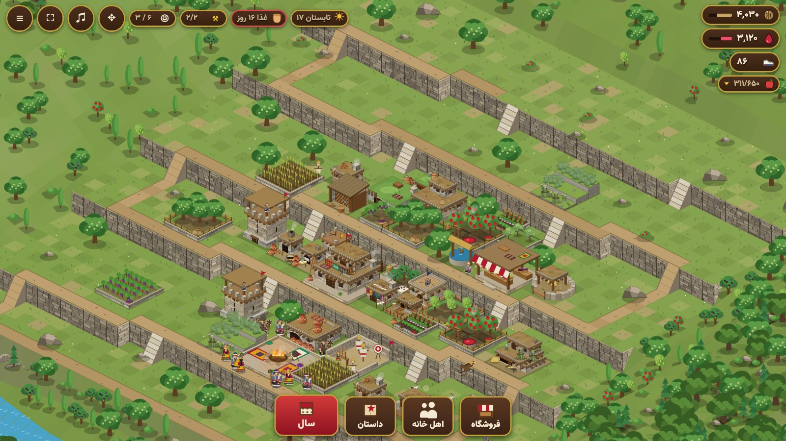
۱. آغاز
- نشانی https://hawraman-api-production.up.railway.app/ را در مرورگر باز کنید، یا برنامه را روی تلفن یا تبلت. بازی افقی است: تلفن را بچرخانید؛ روی رایانه پنجرهٔ پهن بهتر است.
- شروع بازی را بزنید (بعدها: ادامه). روستای شما در یکی از جایهای هورامان است و هرکدام زمین خود را دارد: درهٔ سبز، دامنهٔ پرشیب، تنگهٔ رود یا دشت باز. از فهرست میتوانید به جای دیگری بروید.
- صدا پس از نخستین لمس یا کلیک آغاز میشود. زبان، صدا، گرافیک و راهنماها زیر دکمهٔ فهرست (بالا، گوشه) و سپس تنظیمات است.
- زبانها. انگلیسی، فارسی، و هورامیِ نودشه، با الفبای کوردی و با الفبای لاتین. ترجمهٔ هورامی هنوز در کار است: هر جا متنی آماده نیست، فارسی (و در الفبای لاتین، همان فارسی به حروف لاتین) جایش را میگیرد. با دکمههای زبان در صفحهٔ آغاز یا در تنظیمات عوضش کنید.
- تمامصفحه. در مرورگر، دکمهٔ گرد تمامصفحه (در نوار بالا، و در گوشهٔ صفحهٔ آغاز) صفحه را پر میکند؛ دوباره بزنید تا بیرون بیایید. در آیفون مرورگرها اجازه نمیدهند: Share و سپس Add to Home Screen را بزنید و بازی را از آنجا باز کنید.
- روی تبلت یا تلفن تاشوی باز، بازی را میتوان ایستاده هم نگه داشت، و با تا کردن یا باز کردن تلفن بیدرنگ دوباره کشیده میشود.
۲. صفحه
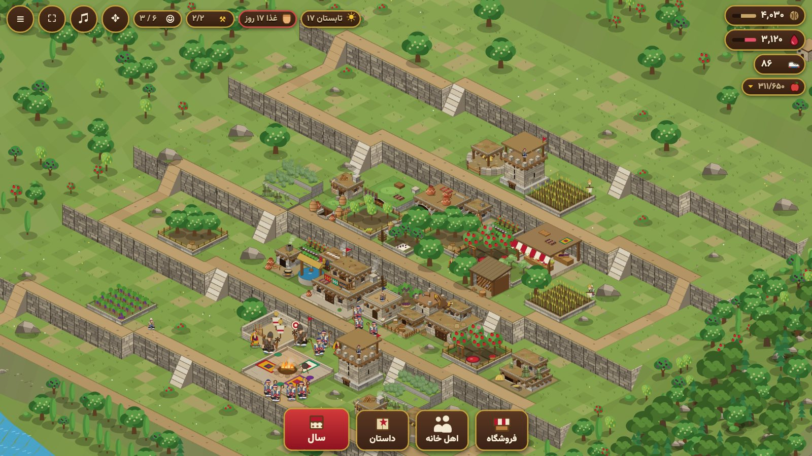
۱۲۳۴۵۶۷۸۹۱۰۱۱۱۲۱۳۱۴- گردو: پول ساختوساز
- آب انار: بهای مهارت نگهبانان و یاران
- کلاش: ساخت را همین الان تمام میکند و در بازار تقریباً هر چیزی میخرد
- میوهٔ بازرگانی (در انبار نگهداری میشود)
- فصل
- آذوقهٔ زمستان: غذا، لو و هیزم
- بنّاهای آزاد / کل
- اهل خانه: اعضا / نگهبان
- تمامصفحه
- منو
- فروشگاه
- اهل خانه
- داستان
- سال
- بالا، یک سو: انبارهای شما. گردو بهای ساختن است. آب انار بهای مهارتها و یاران است. کلاش، گیوهٔ سفید، گرانبهاست: کار را در دم به پایان میرساند و تقریباً هر چیزی میخرد. نشان میوه، میوههای شما را باز میکند.
- بالا، سوی دیگر: فصل و روز، خوراک چند روز را دارید، بنّاهای آزاد، و اهل خانه.
- پایین: فروشگاه (ساختن)، اهل خانه (خانواده و نگهبانان)، داستان (فصلهای تاریخ)، سال (تقویم، یورش، نقشه، پیشرفت روستا). ایل هنگام بازی آنلاین پیدا میشود و اردوگاه وقتی دیوانخانه به سطح ۳ برسد.
- جابهجایی: برای حرکت بکشید؛ برای بزرگنمایی دو انگشت را باز و بسته کنید یا چرخ موس را بچرخانید.
- بچهها که دور خانهها بازی میکنند و چیزی از زمین برمیدارند، برای زندهبودن روستا هستند. از شما چیزی نمیخواهند.
۳. نخستین ساختمانها

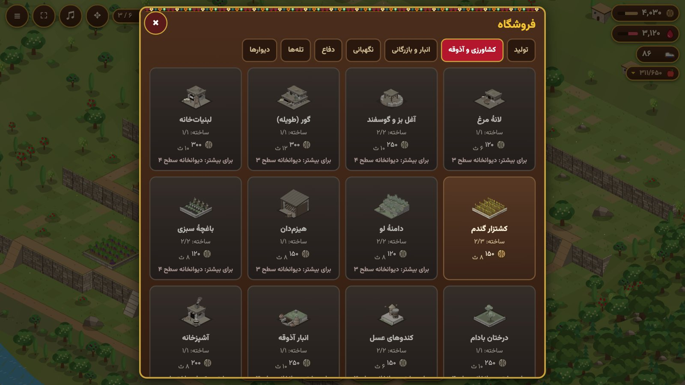

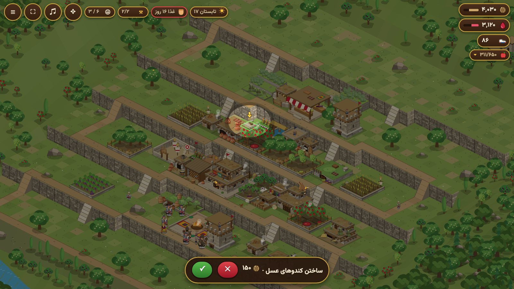

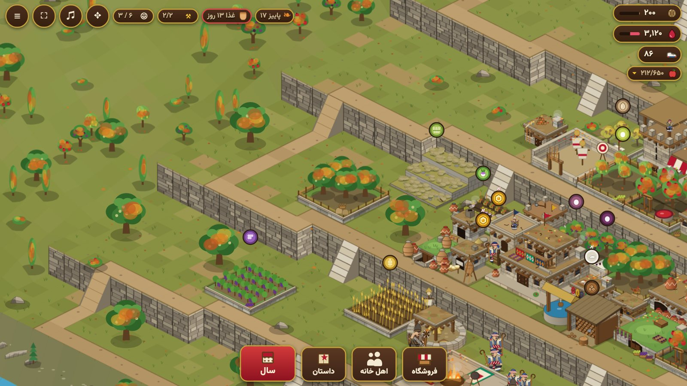

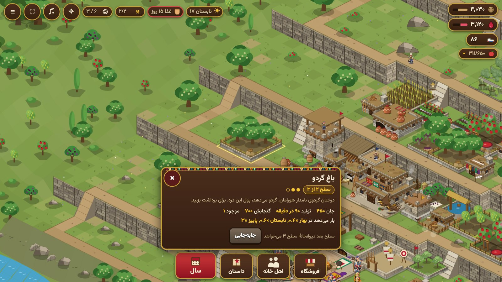

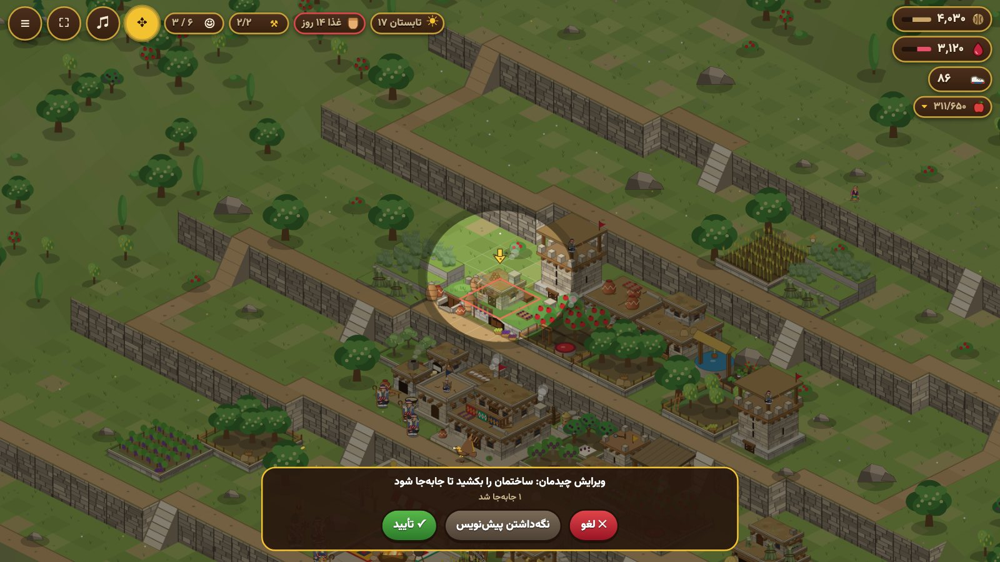

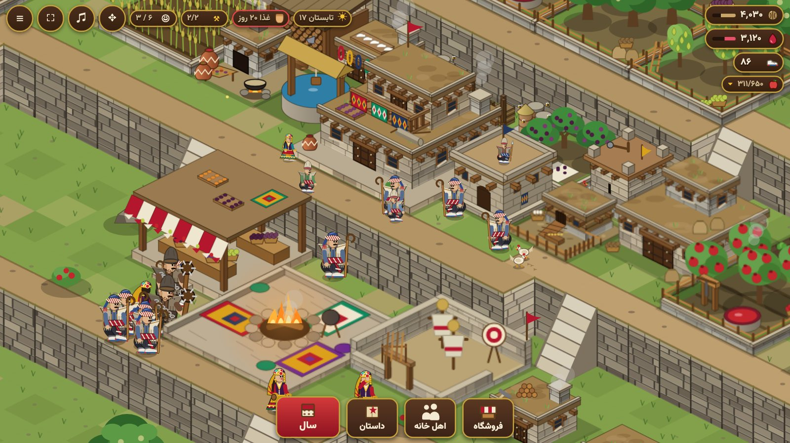
- خانهٔ بزرگِ پرچمدار دیوانخانه است، دل روستا. سطح آن معین میکند چه چیزی و چند تا میتوانید بسازید.
- فروشگاه را بزنید، مزرعهای مانند کشتزار گندم را برگزینید، سپس روی زمین همانجا که باید باشد بزنید و تأیید کنید. هنگام جایگذاری، باقی روستا تیره میشود و پیکانی ساختمان تازه را نشان میدهد. خانههای سبز یعنی جا میشود؛ قرمز یعنی نه.
- هر کلبهٔ بنّا یک بنّا میدهد، پس به شمار آنها میتوان همزمان ساخت. بالا رفتنش را میبینید: نخست زمین نشانهگذاری میشود، سپس پی، اسکلت چوبی، دیوارها و بام. باغها و کشتزارها رج به رج کاشته میشوند. ساختمانِ در دست ساخت زمانش را نشان میدهد؛ کلاش آن را همین حالا تمام میکند.
- وقتی ساختمانی حبابی با گردو یا میوه نشان میدهد، برای برداشت روی آن بزنید. آن لمس فقط برداشت میکند. روی ساختمانِ بیحباب بزنید تا پنلش باز شود: ارتقا، جابهجایی، یا خواندن کارش. سطح آن زیر نامش نوشته شده، با یک نقطه برای هر سطحی که میتواند به آن برسد.
- هر وقت توانستید دیوانخانه را ارتقا دهید. هر سطح ساختمانهای تازه و شمار بیشتری از داشتهها را باز میکند. دیوانخانه فقط وقتی بزرگ میشود که همهٔ ساختمانهای دیگرِ شما، جز دیوارها و تلهها، تمام شده و به بالاترین سطحی که اجازه میدهد رسیده باشند. پنل آن میگوید چه چیزی هنوز باید بالا برود.
- چیدمان دوبارهٔ روستا. دکمهٔ گردِ چهارپیکان (بالا) را بزنید تا حالت ویرایش باز شود. روی هر ساختمان دست بگذارید و آن را به جای تازه بکشید؛ اگر جا نشود برمیگردد. سپس تأیید، لغو یا نگهداشتن پیشنویس را برگزینید: پیشنویس روستا را همانطور نگه میدارد و بار دیگر که حالت ویرایش را باز کنید برمیگردد.
۴. انبارها پر میشوند
هر انبار اندازهای دارد که نوار زیر آن نشان میدهد. وقتی انبار پر است، برداشت چیزی نمیافزاید. برای گردو انبار گردو، برای آب انار سردابهٔ آب انار و برای میوه انبار را بسازید یا ارتقا دهید. بازار میوه را به گردو یا آب انار میفروشد.
۵. اهل خانه
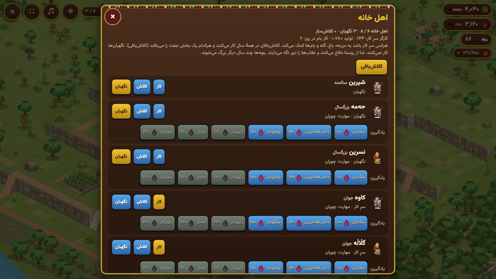
اهل خانه را باز کنید. هر عضو خانواده یک کار دارد: کار (دست بیشتر، بار بیشترِ هر مزرعه)، کلاشبافی، یا نگهبانی. نگهبانان از دام و روستا پاسداری میکنند و به یورش میروند، اما کار نمیکنند. بیشتر: اهل خانه.
۶. سال و زمستان

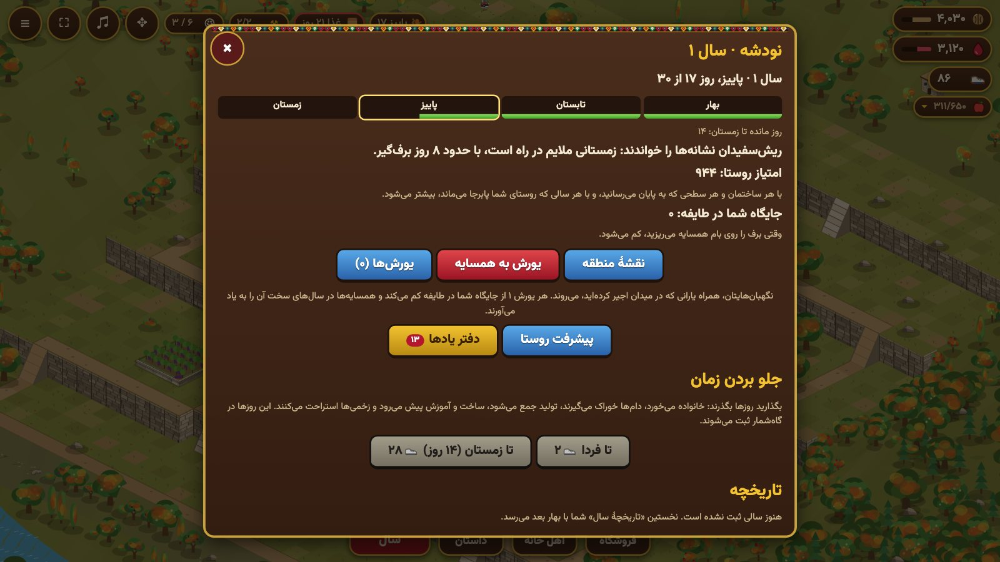

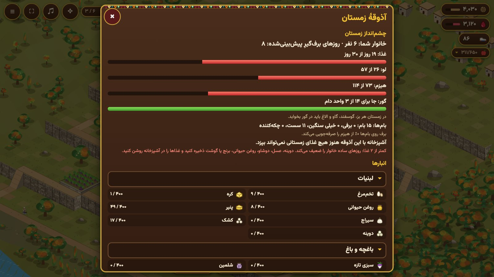

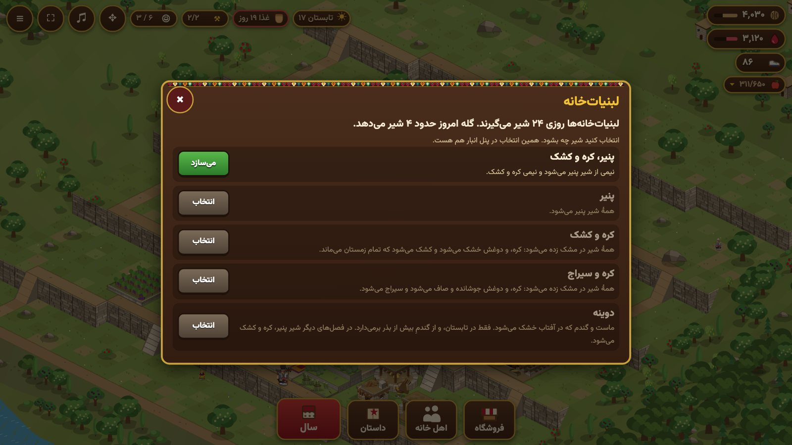

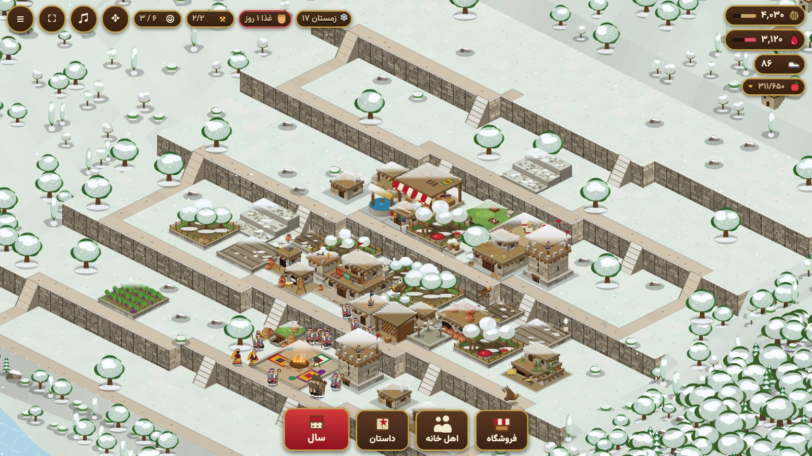

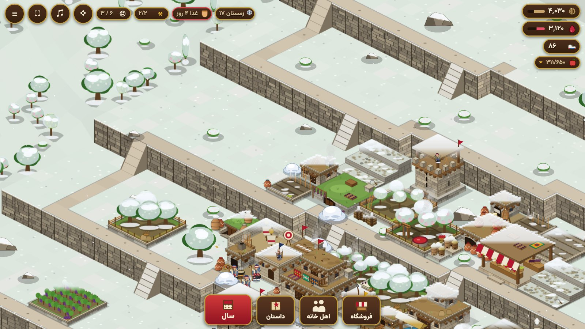
- سال را باز کنید. هر فصل یک روز واقعی است و ۳۰ روز بازی دارد؛ یک سال چهار روز واقعی میکشد. با کلاش میتوان روزها را تندتر گذراند.
- باغها بیشتر میوهٔ خود را در پاییز میدهند و در زمستان میآسایند. نگاه کنید به فصلها و سال.
- زمستان آزمون است. برف گردنه را میبندد و خانواده با اندوختهاش میگذراند. پیش از زمستان سه چیز را پر کنید: خوراک، علوفهٔ دام، و هیزم. پنل انبارها (روی نشان خوراک بزنید) نشان میدهد هرکدام چند روز میکشد.
- آشپزخانه خوراک را درست میکند. روی آن بزنید و سفارشهای آشپزخانه را باز کنید: شلمین، روغن حیوانی، خوراکیهای خشک و غذاهای زمستان را روشن کنید تا هر روز از آنچه در انبار هست بسازد. نگاه کنید به کالا و خوراک.
- لبنیاتخانه شیر را عمل میآورد. روی آن بزنید و چه بسازد را باز کنید تا برگزینید شیر چه بشود: کره و دوینه، کشک، پنیر، سیراج و مانند آن.
- دامها تخم و شیر میدهند و در بهار بچه میآورند؛ در زمستان جای سرپوشیده و علوفه میخواهند. نگاه کنید به دام و طیور.
- در زمستان مراقب بامها باشید: برف سنگین را بروبید و بامهای صافِ گِلی را پیش از آنکه باران و آبشدن برف آنها را به چکه بیندازد با بانتلین بغلتانید (بام چوبی یا سنگی نیازی ندارد). برفی که میروبید روی بام پایینی میریزد یا کنار خانه کپه میشود و تا آبشدن برفها میماند. خانههایی که کنار هماند میتوانند روزی یک بار بامهایشان را با هم، همردیف، بروبند، بیآنکه از کار روزانهٔ خانواده کم شود.
۷. دفاع از روستا
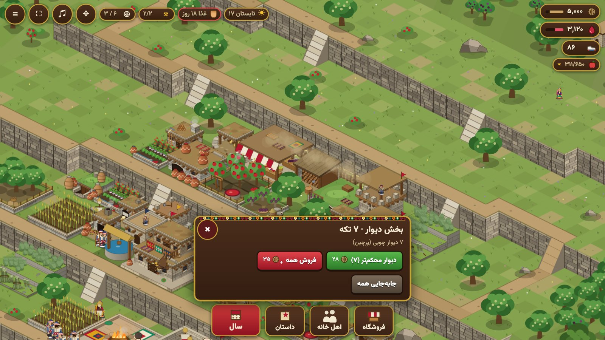
- گرگها در زمستان میآیند و خرس در پایان پاییز. هشداری میگیرید و سپس درگیری کوتاهی در روستای خودتان. برجها، تلهها و سگها خودشان میجنگند؛ روی زمین بزنید تا نگهبانان را به جایی که لازم است بفرستید.
- تلهها پنهان میمانند تا یورشگری نزدیک شود. صفحهٔ ساختمانها کار هرکدام را نشان میدهد.
- همسایهها ممکن است در نبود شما یورش ببرند. برجهای دیدهبانی، نگهبانخانه، سگدانی، تلهها و دیوارها همه یاری میکنند. دربارهٔ دفتر یورشها و پاسخ به یورش نگاه کنید به یورش و دفاع.
- دیوار: در فروشگاه دیواری برگزینید و روی زمین بکشید تا یک ردیف چیده شود. بیشتر در بخش دیوارهای صفحهٔ یورش.
۸. یورش (اگر ناگزیرید)

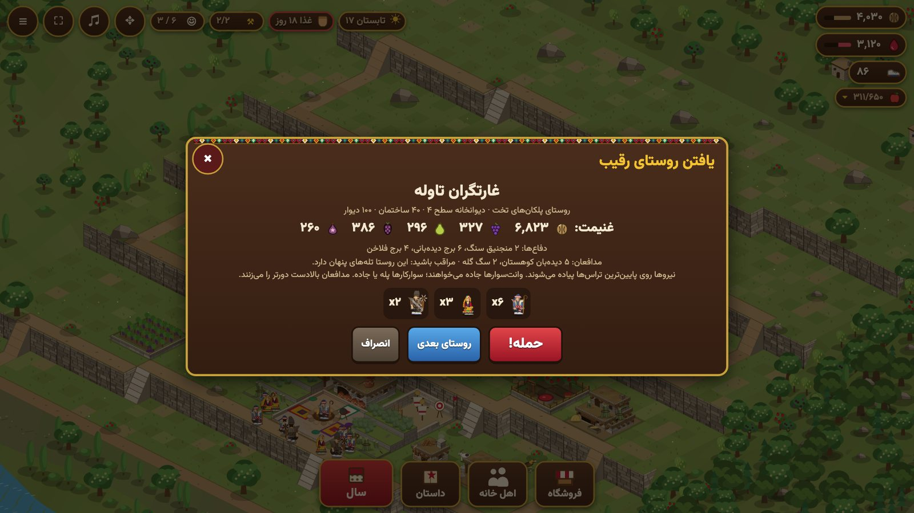

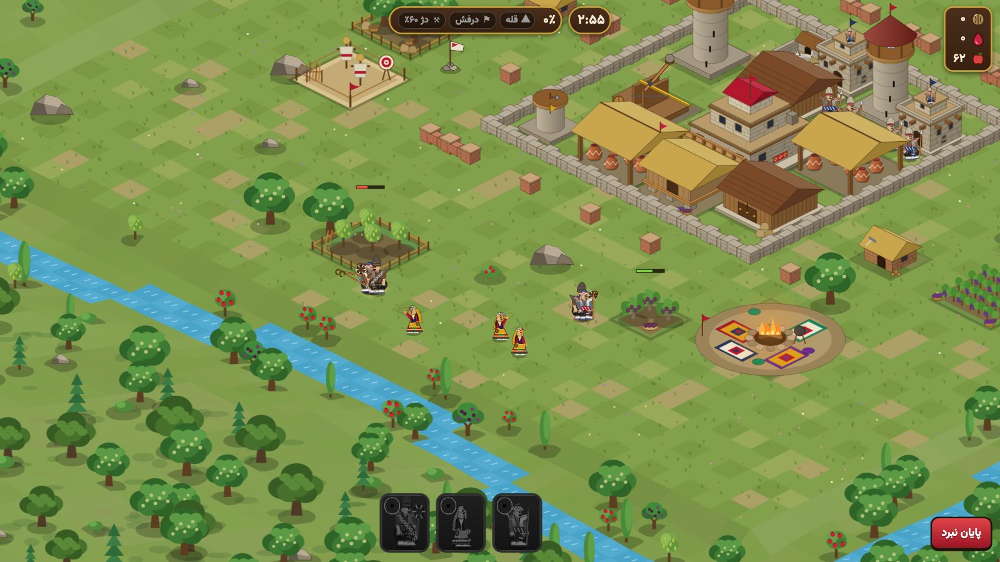
- در سال، یورش به همسایه را بزنید. روستا را میبینید، آنچه دارد و اینکه چگونه از آن دفاع میشود. حمله! را بزنید، یا روستای دیگری ببینید.
- روی زمینِ کنارهٔ روستایشان بزنید تا نگهبانان، و سپس یارانی که در میدان اجیر کردهاید، بروند.
- سه هدف، سه ستاره: رسیدن به پرچم قله، گرفتن بیرق (دیوانخانه آنان)، و درهمشکستن بیشترِ روستا.
- هر یورش از جایگاه شما نزد ایل میکاهد. نگهبانِ شکستخورده زخمی بازمیگردد و چند روز میآساید.
۹. اردوگاه تابستانی و داستان
در سطح ۳ دیوانخانه، اردوگاه باز میشود: چراگاه بلندی که گلهها تابستان به آن میروند، با پشم و لبنیات. داستان فصلهایی از تاریخ دراز هورامان دارد؛ از روستای شما جداست و هر زمان میتوان آن را بازی کرد. در پایان راهنما، بازی آن را به یادتان میآورد.
دفتر یادها
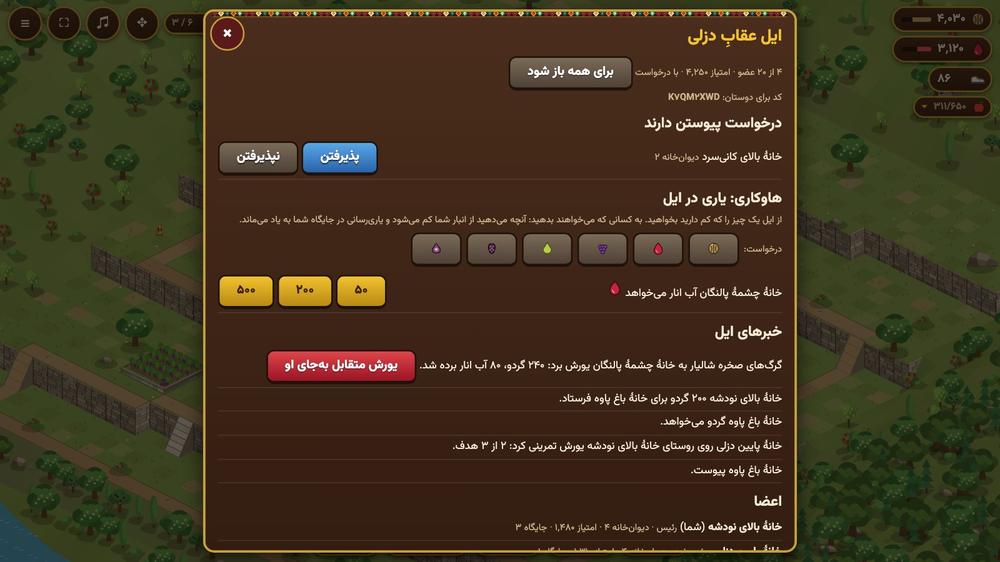
پنل سال دفتر یادها دارد: برگهایی از زندگی واقعی در هورامان، آنگونه که مردم نودشه به یاد دارند (خوراک زمستان، زمین و دام، زندگی روستا، سالهای سخت، جایها، و ساختن کلاش). هر برگ وقتی باز میشود که روستای شما به چیزی که از آن میگوید برسد. این دفتر چیزی را در بازی تغییر نمیدهد؛ برای خواندن است.
۱۰. بازی با دیگران
در تنظیمات بازی آنلاین را روشن کنید تا با بازیکنان واقعی روبهرو شوید: روستاهای آنان همانهایی میشود که به آن یورش میبرید و به شما یورش میبرند، میتوانید به ایلی بپیوندید، و روستایتان میتواند به دستگاهی دیگر برود. نگاه کنید به بازی آنلاین و ایلها و امتیاز.
پرسشهایی که میپرسند
- صدایی نمیشنوم. یک بار در بازی لمس یا کلیک کنید؛ دکمهٔ صدا و تنظیمات را ببینید.
- روستایم نیست. روستا در همان مرورگر یا برنامهای است که آن را ساختهاید. پاککردن دادههای مرورگر آن را از میان میبرد. با روشن بودن بازی آنلاین، روی سرور هم نگه داشته میشود و با یک کد بازمیگردد (نگاه کنید به بازی آنلاین).
- از چیزی بیشتر نمیتوانم بسازم. هر ساختمان سقفی دارد که با سطح دیوانخانه بالا میرود. صفحهٔ ساختمانها آنها را فهرست کرده است.
- برداشت کاری نمیکند. آن انبار پر است: انبارش را بسازید یا ارتقا دهید، یا در بازار میوه بفروشید.
- دکمهٔ اردوگاه یا ایل را نمیبینم. اردوگاه سطح ۳ دیوانخانه میخواهد؛ دکمهٔ ایل بازی آنلاین میخواهد.
- ترانهها. بازی ترانههایی با صدای عثمان هورامی دارد. فعلاً خاموش آغاز میشوند؛ در تنظیمات میتوانید روشنشان کنید و برگزینید کدام پخش شود.
- در آیفونم دکمهٔ تمامصفحه کار نمیکند. سافاری آیفون اجازه نمیدهد. بازی را به صفحهٔ اصلی بیفزایید (Share و سپس Add to Home Screen) و از آنجا بازش کنید.